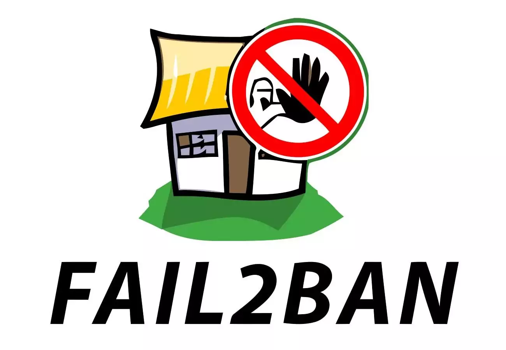

Fail2Ban：禁止导致多个身份验证错误的主机！
Fail2Ban 是一个入侵检测系统框架，它可以保护电脑服务器免受蛮力攻击。以 Python 程式设计语言编写，并能够在类 Unix 系统上运行，这些系统具有本地安装的封包控制系统或防火墙的界面，例如 Iptables 或 TCP Wrapper 工具等。需要注意的是 Fail2Ban 能够降低错误认证尝试的速度，但是它不能消除弱认证带来的风险，而只是服务器防止暴力攻击的安全手段之一。

1. 工具特点介绍
主要介绍 Fail2Ban 工具的原理和注意事项！
- 工作原理
Fail2ban 是使用 Python 编程语言编写的，其功能跟 DenyHosts 是类似的，可以阻挡有人恶意以字典暴力破解密码，通常应用于有开启 sshd、telnetd 跟 ftpd 的主机上。而 Fail2ban 防止工具的做法是扫描 /var/log/auth.log 之类的日志文件，对检测过多的失败的异常登录进行禁止。通过更新系统防火墙规则以在可配置的时间内拒绝来自那些 IP 地址的新连接来实现此目的，用 iptables(给 IPv4 使用)或 ip6tables(给 IPv6 使用)禁止该 IP 之后的连线。至于，要多久之后可以再允许该 IP 再次连线可以在 Fail2ban 的设定档案内设定。
- 注意事项
- 从
v0.10版本开始，fail2ban支持IPv6地址的匹配。
- 从
2. 工具安装启用
介绍多系统的多种工具安装方式！
- Ubuntu
# 确保系统更新到了最新版
$ sudo apt-get update && apt-get upgrade -y
# 安装Fail2Ban工具之后服务将自动启动
$ sudo apt install -y fail2ban
# 如果需要支持电子邮件的话，需要安装Sendmail服务
$ sudo apt install -y sendmail
# 允许通过UFW进行SSH访问，然后启用防火墙
$ sudo ufw allow ssh
$ sudo ufw enable
- CentOS7
# 安装EPEL源
$ sudo yum -y update && sudo yum install -y epel-release
# 安装Fail2Ban工具
$ sudo yum install -y fail2ban
# 如果需要支持电子邮件的话，需要安装Sendmail服务(Sendmail不需要使用Fail2Ban工具)
$ sudo yum install -y sendmail
# 启动并启用Fail2ban和Sendmail
$ sudo systemctl start fail2ban
$ sudo systemctl enable fail2ban
$ sudo systemctl start sendmail
$ sudo systemctl enable sendmail
# 如果遇到提示“没有目录/var/run/fail2ban”或者套接字文件
# “/var/run/fail2ban/fail2ban.sock”的错误，手动创建即可
$ sudo mkdir /var/run/fail2ban
- Debian
# 确保系统更新到了最新版
$ sudo apt-get update && apt-get upgrade -y
# 安装Fail2Ban工具之后服务将自动启动
$ sudo apt install -y fail2ban
# 如果需要支持电子邮件的话，需要安装Sendmail服务
$ sudo apt install -y sendmail-bin sendmail
3. 修改配置文件
安装 fail2ban 工具完成之后，重点就是如何配置其对应的配置文件了。
- [配置文件] => 默认情况下，
Fail2Ban将所有配置文件保存在/etc/fail2ban/目录中。主配置是jail.conf文件，它包含一组预定义的过滤器，所以尽量不要编辑该文件，除非你知道自己在干什么。而且只要有新的更新，该配置配置就会重置为默认值。而我们要做的就是，在同一目录下创建一个名为jail.local的新配置文件，并根据自己的意愿进行修改，即可。
# 虽然会优先读取jail.conf文件，但是jail.local文件会覆盖前者的配置
$ sudo cp /etc/fail2ban/jail.conf /etc/fail2ban/jail.local
- [进程管理] => 如果你使用的是
CentOS或Fedora的操作系统，则需要将jail.local配置文件中的backend选项从auto更改为systemd。虽然在Debian8+或Ubuntu 16.04+上也都是使用了systemd来管理服务进程的，但这并不是必需的设置。默认情况下，在CentOS7中默认的配置文件是没有启用任何服务的，如果我们需要启动对应服务的话，需要手动修改配置文件，例如要启用SSH守护程序。
# /etc/fail2ban/jail.local
# "backend" specifies the backend used to get files modification.
# Available options are "pyinotify", "gamin", "polling", "systemd" and "auto".
# This option can be overridden in each jail as well.
backend = systemd
- [配置服务] =>
Fail2Ban自带有一组预定义的过滤器，用于各种服务，如ssh、apache、nginx等。我们不用对配置文件进行过多的更改，只需在对应服务区域中添加enabled = true启用该服务。禁用服务时将true改为false即可。
# /etc/fail2ban/jail.local
# enabled: 表明服务是要打开还是关闭
# port: 使用默认端口则填写服务名称；非传统端口则需要填写端口号
# logpath: 提供服务日志的位置
# backend: 指定用于获取文件修改的后端
[sshd]
enabled = true
port = ssh
filter = sshd
logpath = %(sshd_log)s
backend = %(sshd_backend)s
maxretry = 5
- [服务分离] => 如果需要监控的服务太多的话，放到一个配置文件里面，找起来还是又不方便的地方。所以，我们可以针对不同的服务配置创建不同的配置文件，每个配置文件立里面只配置对应服务的配置即可。将对应的配置放到
/etc/fail2ban/jail.d/目录下面，即可。
# /etc/fail2ban/jail.d/sshd.local
[sshd]
enabled = true
filter = sshd
banaction = iptables
backend = systemd
maxretry = 5
findtime = 1d
bantime = 2w
ignoreip = 127.0.0.1/8
- [设置白名单] => 默认情况下，大多数选项都已经配置的很完美了，如果要启用忽略对某些特定
IP的访问控制，则可以将IP地址添加到ignoreip区域即可。对于多个IP的情况，用空格隔开IP地址。配置文件中的DEFAULT部分包含Fail2Ban遵循的基本规则集，您可以根据自己的意愿调整任何参数。
# /etc/fail2ban/jail.local
# ignoreip: Fail2Ban不会禁止与列表中的地址匹配的主机；白名单
# bantime: 封禁时间秒，默认是10分钟
# findtime: 如果在最近findtime秒期间已经发生了maxretry次重试，则主机会被禁止
# maxretry: 最大重试次数，子项未设置时以此为准
# sendername: 发件人名称G
# sender: 用于发送告警邮件的邮箱地址
# destemail: 用于接收警报电子邮件的邮箱地址
[DEFAULT]
ignoreip = 127.0.0.1/8 192.168.1.100/24
bantime = 600
findtime = 600
maxretry = 3
sender = escapelife@gmail.com
destemail = escapelife@gmail.com
4. 使用方式说明
配置好配置文件之后，如果查看对应服务呢？=> fail2ban-client
- 工具服务启停操作
# 启动Fail2ban服务
$ sudo systemctl start fail2ban
# 停止Fail2ban服务
$ sudo systemctl stop fail2ban
# 开机自启动Fail2ban服务
$ sudo systemctl enable fail2ban
- 查看启用的服务监控列表
$ sudo fail2ban-client status
Status
|- Number of jail: 2
`- Jail list: apache-auth, sshd
- 获取 SSH 服务禁止的 IP 地址
$ sudo fail2ban-client status ssh
Status for the jail: ssh
|- filter
| |- File list: /var/log/auth.log
| |- Currently failed: 1
| `- Total failed: 3
`- action
|- Currently banned: 1
| `- IP list: 192.168.1.115
`- Total banned: 1
# 根据配置文件中的服务配置字段
$ sudo fail2ban-client status ssh-iptables
- 删除禁止的 IP 地址
# 根据配置文件中的服务配置字段
$ sudo fail2ban-client set ssh unbanip 192.168.1.115
$ sudo fail2ban-client set ssh-iptables unbanip 192.168.1.115
- 手动添加白名单
# 根据配置文件中的服务配置字段
$ sudo fail2ban-client set ssh addignoreip 192.168.1.115
$ sudo fail2ban-client set ssh-iptables addignoreip 192.168.1.115
5. 示例演示说明
介绍几种常见服务配置的方式，拿来即用！
- [1] 防止 SSH 密码爆破
# [ssh-iptables]模块的配置修改
[ssh-iptables]
enabled = true
filter = sshd
action = iptables[name=SSH, port=22, protocol=tcp]
logpath = /var/log/secure
maxretry = 3
findtime = 300
- [2] 阻止恶意扫描
# 新增[nginx-dir-scan]模块
[nginx-dir-scan]
enabled = true
filter = nginx-dir-scan
action = iptables[name=nginx-dir-scan, port=443, protocol=tcp]
logpath = /path/to/nginx/access.log
maxretry = 1
bantime = 172800
findtime = 300
- [3] 防止 CC 攻击
# 新增[nginx-cc]模块
[nginx-cc]
enabled = true
port = http,https
filter = nginx-cc
action = %(action_mwl)s
maxretry = 20
findtime = 60
bantime = 3600
logpath = /usr/local/nginx/logs/access.log
- [4] 防止 vsftpd 攻击规则
[vsftpd-notification]
enabled = true
filter = vsftpd
action = sendmail-whois[name=VSFTPD, dest=you@example.com]
logpath = /var/log/vsftpd.log
maxretry = 5
bantime = 1800
[vsftpd-iptables]
enabled = true
filter = vsftpd
action = iptables[name=VSFTPD, port=ftp, protocol=tcp]
sendmail-whois[name=VSFTPD, dest=you@example.com]
logpath = /var/log/vsftpd.log
maxretry = 5
bantime = 1800
6. 参考链接地址
送人玫瑰，手有余香！